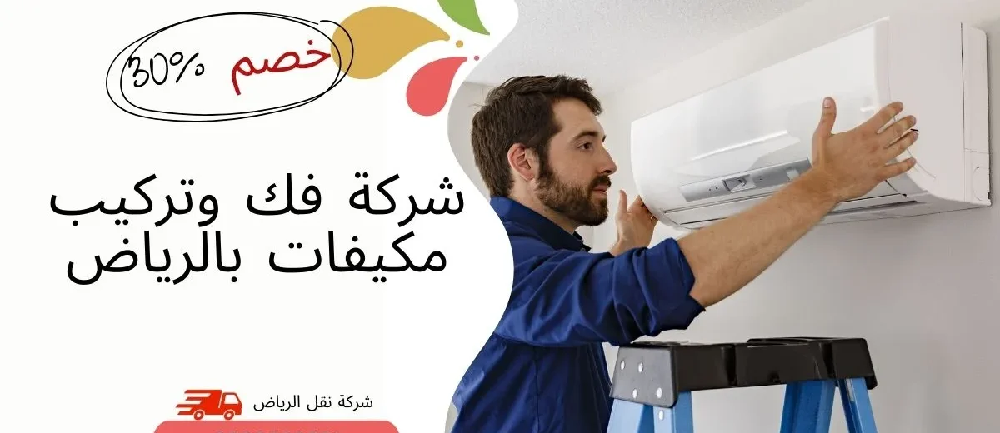

افضل شركة فك وتركيب مكيفات بالرياض بسعر منافس 0541145506

إذا كنت تبحث عن شركة فك وتركيب مكيفات بالرياض، أنت هنا من خلال شركة نقل الرياض في المكان الصحيح، حيث أننا نوفر لك واحدة من أهم الخدمات التي يحتاجها سكان الرياض، خاصة مع تغير الفصول وضرورة صيانة أجهزة التكييف، لذلك إذا كنت تريد الحصول على خدمة موثوقة ومتخصصة في فك وتركيب المكيفات، فإن شركتنا هي الأفضل لك على الإطلاق لأننا تقدم لك حلولًا متكاملة تلبي جميع احتياجاتك، كما أن بفضل فريقنا المحترف، نقدم خدمات متميزة بأسعار تنافسية وجودة لا تضاهى، مع الحرص على إنجاز العمل بسرعة وكفاءة اتصل بنا 0541145506
شركة فك وتركيب مكيفات بالرياض
تعتبر شركة فك وتركيب مكيفات بالرياض من أكثر الشركات التي تتميز تقديم هذه الخدمة، حيث أن خدمات لا تقتصر على مدينة الرياض فقط بل نحن نقدمها في جميع أنحاء مدن المملكة، كما تتميز شركة فك وتركيب مكيفات بالرياض بخبرتها الطويلة في هذا المجال، وذلك لأننا نقوم باستخدام أحدث المعدات لضمان فك وتركيب المكيفات بشكل احترافي وآمن، سواء كنت بحاجة إلى تركيب مكيف جديد أو نقل مكيف من مكان إلى آخر، فنحن هنا لنضمن لك الحفاظ على سلامة الأجهزة دون التسبب في أي ضرر، كما يعمل فريقنا على تنظيف المكيفات وفحصها قبل التركيب للتأكد من كفاءتها، بالإضافة إلى تقديم نصائح للمحافظة على عمرها الافتراضي، بالإضافة إلى أننا نوفر أيضًا خدمة الطوارئ لتلبية احتياجاتك العاجلة، مما يجعلنا الخيار الأمثل لسكان الرياض الذين يبحثون عن خدمات سريعة وآمنة.
شركة تركيب مكيفات سبليت بالرياض
يمكن لشركة تركيب مكيفات سبليت بالرياض، أن تقوم بتقديم حلولًا متخصصة لتركيب أجهزة التكييف بكفاءة ودقة عالية، وهذا ما يجعلها الخيار الأمثل للأفراد والمؤسسات في الرياض، كما أننا ندرك أهمية التكييف في المنازل والمكاتب، خاصة مع ارتفاع درجات الحرارة في فصل الصيف، ولهذا السبب حرصنا على تقديم خدمة تركيب احترافية تضمن عمل المكيف بكفاءة عالية منذ اللحظة الأولى.
فأهم ما يميز فريقنا هي خبرته الواسعة في التعامل مع مكيفات السبليت بمختلف أنواعها وأحجامها، حيث نستخدم أدوات حديثة وتقنيات متطورة لضمان تركيب دقيق وآمن بالإضافة إلى ذلك، نقوم بتقييم المكان واختيار الموقع المناسب لتركيب الوحدة الداخلية والخارجية للحصول على أفضل أداء ممكن، كما نوفر خدمات إضافية مثل فحص الأجهزة وتنظيفها قبل التركيب لضمان كفاءتها.
ومع شركة تركيب مكيفات سبليت شرق الرياض، يمكنك الاعتماد على خدمة عالية الجودة بأسعار تنافسية ووقت تنفيذ سريع، مما يجعلنا خيارك الأمثل عند البحث عن خبراء في تركيب المكيفات.
مميزات شركة فك وتركيب مكيفات بالرياض
إذا كنت تبحث عن شركة فك وتركيب مكيفات بالرياض، فإن شركة نقل الرياض هي أفضل خيار لك، وذلك لأن الشركة تقدم لك خدمات متكاملة تتميز بالدقة العالية والاحترافية، بالإضافة إلى أن الشركة تمتلك فنيين محترفين في فك وتركيب جميع أنواع المكيفات سواء سبليت، شباك، مكيفات مركزية، تتميز شركة نقل الرياض بإستخدام أحدث التقنيات مع مراعاة أعلى معايير السلامة أثناء الفك والتركيب، كما تقدم لك الشركة كافة النصائح والمعلومات عن كيفية الحفاظ على كفاءة المكيف لأطول فترة ممكنة، تواصل الان مع أفضل شركة فك وتركيب مكيفات بالرياض “شركة نقل الرياض” للحصول على أفضل الخدمات.
شركة فك مكيفات سبلت بالرياض
إذا كنت بحاجة إلى شركة تركيب وفك مكيفات سبليت بالرياض تتميز بالاحترافية العالية والسرعة في أداء وظيفتها، فإن شركة نقل الرياض هي الخيار الأمثل لك، حيث أنها تمتلك خبرة واسعة في مجال تركيب وفك مكيفات السبليت بجميع أنواعها، مع ضمان المحافظة على وحدة التبريد والدوائر الكهربائية دون إحداث بهم أي ضرر، تمتلك الشركة فنيين محترفين يلتزمون بالخطوات الصحيحة في فك وتركيب مكيفات سبلت بالرياض، حيث يبدأ الفني أولًا بفصل الكهرباء، ثم التعامل مع الأنابيب و الغاز والتوصيلات بعناية باستخدام أحدث الأدوات والتقنيات لضمان الحفاظ على كفاءة المكيف، تواصل الان مع شركة نقل الرياض الرائدة في فك وتركيب مكيفات سبليت بالرياض، واحصل على تجربة خالية من المتاعب في فك وتركيب المكيفات.
شركة صيانة مكيفات بالرياض
إذا كنت تبحث عن شركة صيانة مكيفات بالرياض، فإن شركة نقل الرياض هي خيارًا مثاليًا لك ولعائلتك، تجمع الشركة بين الجودة والسرعة والخبرة الواسعة في مجال صيانة المكيفات بجميع أنواعها سواء كان شباك أو سبلت أو مكيفات مركزية بواسطة فنيين محترفين في الكشف عن سبب الأعطال المفاجئة وإصلاحها في أسرع وقت بإستخدام أحدث أدوات الفحص لضمان أداء مكيفك بأعلى جودة، تشمل خدمات أفضل شركة صيانة مكيفات بالرياض “شركة نقل الرياض” تنظيف الفلاتر الداخلية والخارجية، تغيير قطع الغيار الأصلية، فحص نسبة غاز الفريون، أداء التبريد لضمان كفاءة الجهاز، تواصل الان مع شركة نقل الرياض واحصل على صيانة فورية تحافظ على جودة هواء مكيفك.
صيانة وتركيب مكيفات سبليت شرق الرياض
إذا كنت تعاني من ضعف جودة تبريد مكيفك و ارتفاع فاتورة الكهرباء، فإنه يجب عليك فورًا الاستعانة بشركة صيانة وتركيب مكيفات سبليت شرق الرياض “شركة نقل الرياض” لتقوم بعمل صيانة لجهازك على يد فنيين محترفين ذوي خبرة طويلة في مجال صيانة المكيفات، تقوم الشركة أيضًا بتركيب مكيفات السبلت الجديدة بدقة عالية وضمان ضبط التمديدات وتثبيت الوحدة الداخلية والخارجية في المكان المناسب لضمان أفضل جودة تبريد لمكيفك،كما تقوم الشركة بعمل صيانة دورية لجهازك تشمل تنظيف الفلاتر، تعبئة غاز الفريون في حالة نقص نسبته، معالجة أي أعطال بكفاءة وسرعة عالية، تواصل الأن مع شركة نقل الرياض الرائدة عالميًا في صيانة وتركيب مكيفات سبيلت شرق الرياض.
سعر تركيب مكيفات سبلت
لا يوجد سعر محدد لتركيب مكيفات سبلت بالرياض، وذلك لأن السعر يتحدد على حسب عده عوامل منها:
- نوع المكيف (عادي أو انفرتر)
- ارتفاع المكان وصعوبة التركيب.
- قدرة المكيف
- هل تضمن الخدمة فك مكيف قديم أم لا
إذا كنت تبحث عن عن شركة تركيب مكيفات سبلت بالرياض توفر لك خدمة تركيب وصيانة المكيفات بأسعار رمزية وجودة عالية، فإن شركة نقل الرياض تقدم لك هذه الخدمة على أيدي فنيين محترفين باستخدام أحدث الأدوات.
تركيب مكيفات سبلت شمال الرياض
إذا كنت تبحث عن شركة تركيب مكيفات سبلت شمال الرياض، فإن شركة نقل الرياض تعتبر خيارًا مثاليًا لما تقدمه من خدمات ذات جودة عالية، ومن هذه الخدمات:
- فك المكيفات القديمة عند تركيب مكيف جديد.
- تركيب وحدات داخلية وخارجية مع التمديدات.
- توصيل كهرباء بطريقة آمنه وفقًا للمعايير الفنية.
- اختبار ضغط الفريون والتأكد من كفاءة التشغيل.
- ضبط التوازن والتأكد من التثبيت الآمن.
تقدم الشركة كافة هذه الخدمات باستخدام فنيين محترفين، بأفضل الأسعار، تواصل الأن مع شركة نقل الرياض عبر 0541145506
شركة تركيب مكيفات بالخرج
تعتبر خدمة تركيب المكيفات من أفضل الخدمات التي تقدمها شركة فك وتركيب مكيفات بالرياض، حيث تتم عملية التركيب عبر خطوات منظمة لضمان كفاءة عمل الجهاز وسلامة التركيب، والتي تمثل في هذه الخطوات الأساسية:
اختيار الموقع المناسب
نقوم بتحديد المكان المناسب لتركيب الوحدة الداخلية بحيث يكون بعيدًا عن أشعة الشمس المباشرة ويضمن توزيع هواء متساوي في الغرفة.
ثم يتم تثبيت الوحدة الخارجية في مكان جيد التهوية لتجنب ارتفاع الحرارة وضمان أداء أفضل.
تثبيت الحامل الداخلي
في هذه الخطوة نقوم بتثبيت الحامل المعدني للوحدة الداخلية، عن طريق استخدام أدوات دقيقة لضمان التثبيت بشكل آمن ومستقيم.
تركيب الوحدة الداخلية
يتم وضع الوحدة على الحامل وربط الأنابيب النحاسية والكابلات الكهربائية بين الوحدتين الداخلية والخارجية بكل دقة وحذر.
تثبيت الوحدة الخارجية
ثم يتم تركيب الوحدة الخارجية على حامل قوي يتحمل وزنها ويوفر تهوية جيدة.
التوصيل الكهربائي
في هذه الخطوة يتم توصيل الكابلات الكهربائية بعناية بين الوحدتين، ثم يتم تشغيل التيار لضمان سلامة التوصيلات.
اختبار الجهاز
وفي الخطوة الأخيرة بعد الانتهاء من التركيب، يتم تشغيل المكيف لفحص الأداء وضمان عدم وجود أي تسرب أو مشكلة في التبريد.
تتطلب عملية التركيب خبرة ودقة، ولهذا يُنصح بالاعتماد على متخصصين مثل شركة تركيب مكيفات بالرياض لضمان التركيب بشكل مثالي.
شركة تنظيف مكيفات بالرياض
عند البدء في عملية تنظيف مكيفات الرياض، تقوم شركتنا بالاعتماد على عدة خطوات مدروسة لضمان تنظيف عميق وفعال يحسن من أداء المكيف ويطيل عمره الافتراضي، حيث يمكن أن تبدأ العملية بفحص شامل للمكيف لتحديد حالته والمشاكل التي قد تؤثر على كفاءته، مثل تراكم الغبار أو انسداد الفلاتر.
ثم يتم فك الأجزاء القابلة للتنظيف، والتي تتمثل في الفلاتر والشبكات، وتنظف باستخدام مواد خاصة تزيل الغبار والأوساخ دون إتلافها، بالإضافة إلى استخدام أجهزة ضغط الهواء لتنظيف الزعانف الداخلية وإزالة أي أتربة أو عوائق تؤثر على تدفق الهواء، كما يتم تنظيف الوحدة الخارجية بحذر لضمان عدم تراكم الغبار على المروحة أو المكثف، مما يساعد على تحسين كفاءة التبريد.
في نهاية الخدمة، يتم إعادة تركيب الأجزاء ويتم تشغيل المكيف للتأكد من كفاءته، كما توفر الشركة أيضًا نصائح للمحافظة هامة تساعدك على نظافة المكيف وتقليل استهلاك الطاقة، مما يجعلها الخيار الأمثل لسكان الرياض الذين يبحثون عن خدمات تنظيف احترافية.
الأسئلة الشائعة حول شركة فك وتركيب مكيفات بالرياض
كيف يمكنني الحصول على شركة مكيفات بالرياض؟
إذا كنت تبحث عن شركة فك وتركيب مكيفات بالرياض، وتريد خدمات عالية الجودة التي تتمثل في التنظيف أو التركيب في الرياض، فإن شركة نقل الرياض توفر لك أفضل الحلول المثالية، كما أن بفضل فريقها المتخصص وخبرتها الواسعة، تضمن لك الخدمة الأفضل بأسعار تنافسية وخصومات تصل إلى 30% للتواصل معنا، لا تتردد في الاتصال عبر أرقامنا المتاحة دائمًا لخدمتك.
ما هي مميزات فني تركيب مكيفات سبليت؟
بفضل المميزات التي تقدمها شركة فك وتركيب مكيفات بالرياض، يعتبر فني تركيب مكيفات السبليت الذي نوفر هو الخيار الأمثل لضمان تشغيل المكيف بكفاءة ولفترة طويلة، فـ من أكثر المميزات التي به هي:
- خبرة ودقة: حيث أنه يتمتع بخبرة كبير في تركيب مكيفات سبليت التي تضمن لك تركيب الأجهزة بدقة وكفاءة.
- معرفة فنية: لديه خبرة كبيرة وشاملة بكافة أنواع المكيفات وتقنيات التركيب المختلفة.
- استخدام أدوات متخصصة: يقوم باستخدام أفضل الأدوات الحديثة لضمان سلامة التركيب والحفاظ على المكيف.
- اختيار الموقع المثالي: قادر على المكان الأمثل لتركيب الوحدة الداخلية والخارجية لتحسين التبريد.
- فحص الأداء: يقوم بعمل اختبار للمكيف بعد التركيب لضمان عمله بكفاءة وسلامة التوصيلات.
- توفير الوقت: يقوم بإنجاز العمل بسرعة دون الإخلال بالجودة.
- خدمة متكاملة: يقدم خدمات إضافية مثل التنظيف والصيانة عند الحاجة.
- تقديم نصائح: يوجه العملاء حول كيفية الحفاظ على المكيف وتقليل استهلاك الطاقة.
في النهاية يمكنك التواصل مع شركة نقل الرياض، بدون قلق أبدًا بشأن فك وتركيب المكيفات، حيث نحرص على تقديم خدمة عالية الجودة تلبي تطلعاتك، فـ بفضل خبرتنا وفريقنا المدرب، نضمن لك راحة البال وأداء مثاليًا لأجهزة التكييف الخاصة بك، لا تتردد في التواصل معنا 0541145506 للحصول على خدمة شركة فك وتركيب مكيفات بالرياض التي تجعل تجربتك معنا أفضل بكثير، نحن دائمًا في خدمتك.